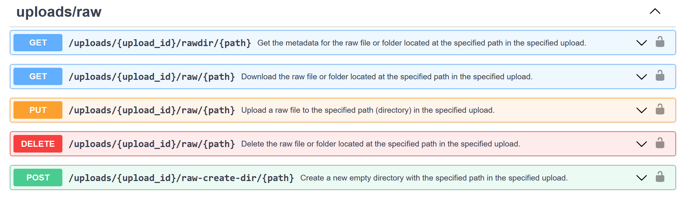

API Basics
Before we start with the practical examples of using NOMAD’s API, let's briefly provide a short explanation of essential concepts:
API (Application Programming Interface):¶
An API is a set of rules and protocols that allows different software programs to communicate with each other, facilitating communication and data exchange between them. This very broad term is often used for web-based systems, database systems, operating systems, or even computer hardware communicating with each other. You can think of an API as a waiter in a restaurant: you place your order (the request), the waiter brings it to the kitchen (the server). After your ordered dish is prepared, the waiter delivers the dish (the response) back to you. This waiter-service interaction is similar to how an API functions as a messenger between you and an application. For a simple explanation, check out this YouTube video.
HTTP (Hypertext Transfer Protocol):¶
HTTP is the universally accepted protocol (a set of rules governing data exchange between computers) for transferring data on the web. Consider this example: you enter a website address (URL) into your browser. Your browser then sends an HTTP request to the server that hosts that site. The server processes this request and responds by sending back the data needed to display the page—this includes HTML, images, and other content, all communicated via HTTP. This data is then received by your browser, which renders the page for you to view. This HTTP protocol is crucial not only for basic web browsing but also serves as the foundation for more complex web interactions facilitated by APIs.
There are five fundamental HTTP methods used to interact with resources:
- GET: Retrieves data from a server at the specified resource. A GET request is used to obtain either a specific item or a collection of items.
- POST: Sends data to the server to create a new resource. The data sent in the request body is used to define the new resource.
- DELETE: Removes the resource at the specified URL. This command is used to delete an existing resource identified by its URL.
- PUT: Updates the target resource with the data provided in the request body or creates it if it doesn’t exist.
Note: NOMAD highlights the type of requests that are possible on each resource. Here is an example from the NOMAD's API Dashboard:

Understanding HTTP status and error codes¶
When interacting with APIs, it is also necessary to understand the meaning of the HTTP status codes returned by the server. These codes can help you diagnose and address issues with your requests. Below is an overview of some common and important HTTP status and error codes that you may encounter while using the NOMAD API.
- 200 Successful Response: The request has been successfully processed and the server has sent the expected data in response.
- 400 Bad Request: The server could not process the request due to an error in the request itself, such as incorrect syntax or invalid arguments. Review and correct the request syntax and parameters.
- 401 Unauthorized: The request lacks valid authentication credentials, or the credentials provided do not grant permission for the requested operation. Verify and include correct authentication details.
- 404 Not Found: The server cannot find the specified resource; it may not exist or is unavailable at the given URL. Check the URL and make sure the resource exists.
- 422 Validation Error: The request was well-formed but was unable to be followed due to semantic errors. Review the request data for accuracy and completeness, and adjust any values to meet the expected formats and types as specified in the API documentation
| Response Code | Description | Common Causes | Suggested Action |
|---|---|---|---|
| 200 | Successful Response | Correct request execution | None needed |
| 400 | Bad Request | Syntax errors, invalid arguments | Fix syntax and parameters |
| 401 | Unauthorized | Invalid credentials | Verify credentials |
| 404 | Not Found | Incorrect URL, missing resource | Check URL and resource |
| 422 | Validation Error | Semantic errors in data | Adjust data to API Documentaion |
REST API (Representational State Transfer API):¶
A REST API is a variant of API that primarily handles the interaction with web services through HTTP methods. It utilizes standard operations defined by HTTP — such as GET to fetch data, POST to create new resources, PUT to update existing ones, and DELETE to remove them. Data is usually exchanged in well-known and standard formats like JSON or XML.
JSON (JavaScript Object Notation) is a format for structuring data as key-value pairs, making it easy for humans to read and machines to parse.
{
"name": "Max Mustermann",
"role": "Lab Technician",
"email": "max.mustermann@uni-something.de",
"phone": "+49 123 456789"
}
XML (eXtensible Markup Language): is a markup language for encoding documents, enabling both human readability and machine readability, often used for data storage and transport.